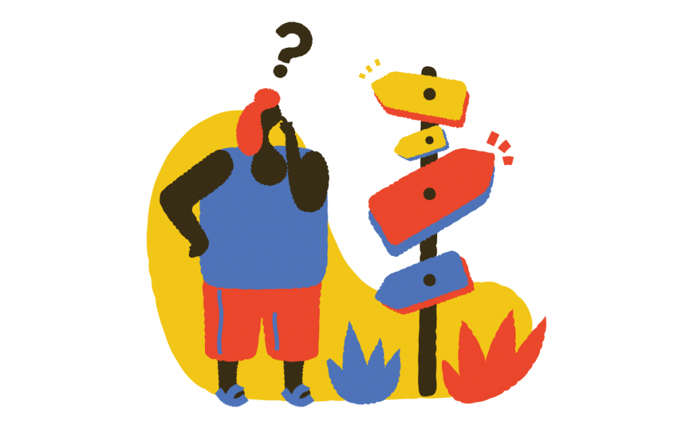

Hola! Bienvenido a
Physicall Guideness
Physicall Guideness

Si quieres encontrar guías cerca de tu zona
inicia sesión o regístrate
para disfrutar de todas las ventajas!
inicia sesión o regístrate
para disfrutar de todas las ventajas!